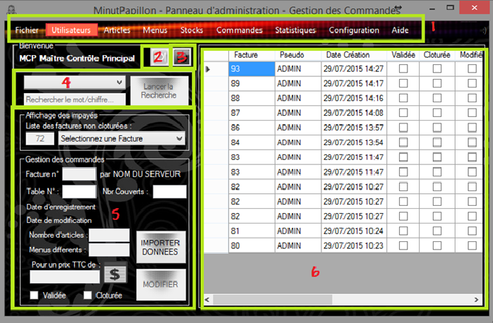

MANUEL D'UTILISATION
1/ Partie Connexion
Voici la première interface de l’application qui s’ouvrira à vous. Avant de pouvoir passer des commandes, il va falloir alimenter la base de données en y ajoutant les articles en vente.
Pour commencer tapez ceci :
1/ Dans « identifiant » : ADMIN
2/ Dans « Mot de passe » : root
Cliquez maintenant sur le bouton « CONNEXION » (3).
Vous arrivez alors à la partie ADMINISTRATION. Comme vous pourrez le voir ci-dessous, beaucoup d’élément à prendre en compte, mais rassurez-vous, tout est prévu pour vous simplifier la prise en main au maximum.
Bien, commençons !
2/ Partie Administration

Nous allons maintenant décortiquer l’interface pour mieux comprendre comment l’utiliser.
[1] Tout en haut, ce trouve la barre de menu. En passant votre curseur dessus, la couleur de fond change (sur l’illustration ci-dessus, « Utilisateur » est entouré d’un cadre rouge). En cliquant dessus, cela aurait pour effet de modifier les cadres 4, 5 et 6.
En dessous ce trouve deux boutons (2 et 3) :
[2] Le premier bouton, avec un logo représentant une assiette, permet à un administrateur de pouvoir basculer sur l’interface de prise de commandes dont nous parleront après, fermant par la même occasion le panneau d’administration (un bouton sur l’interface prise de commande permet à un administrateur de revenir sur le panneau d’administration).
[3] Le second bouton, représentant un symbole d’arrêt, permet quant à lui de se déconnecter, laissant ainsi la possibilité à un serveur d’utiliser la même machine, sans fermer le programme, mais sans pour autant que ce dernier ne puisse accéder à l’interface d’administration.
[4] Une zone dédiée à une recherche spécifique est implémentée ici. Pour pouvoir l’utiliser, sélectionnez tout d’abord dans le menu déroulant le type de recherche désiré, puis votre recherche dans l’emplacement au-dessous.
Deux méthodes de recherche : En tapant deux caractères ou plus, une recherche instantanée s’effectue, autrement un bouton est présent sur le côté en cas de soucis. Le résultat de la recherche apparaîtra dans la zone 6.
[5] Cette zone permet d’effectuer tous les ajouts et modifications que vous désirez. La suppression d’élément a été désactivée pour éviter toute erreur dans le programme. A cet effet, il est donc possible de désactiver un article, menu ou utilisateur. Cela conservera donc les données et vous permettra de le rendre à nouveau actif tout aussi simplement. Si le bouton « IMPORTER DONNEES » est présent, il vous faudra d’abord sélectionner une ligne dans la zone 6 puis de cliquer sur ce bouton. Toutes les données modifiables seront alors importées, et il vous sera alors facile de les modifier à votre convenance.
[6] Cette zone est une grille de vue des données, elle vous permet uniquement de voir les données relatives à la section que vous consultez, ou à la recherche que vous venez d’effectuer. Comme indiqué en point 5, l’importation de données ce fait en cliquant sur une ligne de cette grille avant de cliquer sur le bouton « IMPORTER DONNEES ».
Section Utilisateurs
Votre première tâche va consister à ajouter un nouvel utilisateur, en l’occurrence vous, formateur. Dans la barre de menu [1], cliquez sur Utilisateurs.
Dans le cadre Gestion des utilisateurs, entrez les informations demandées, en n’oubliant pas de sectionner votre rôle (Formateur), puis valider en cliquant sur le bouton « Ajouter ».
Vous pouvez à présent modifier le mot de passe sous lequel vous êtes actuellement connecté, à savoir ADMIN. Pour ce faire, allez sur le grille de vue de données [6] et cliquez sur ADMIN ; puis retournez sur le cadre Gestion des utilisateurs et cliquez sur IMPORTER DONNEES. Dans la deuxième zone de texte, il vous sera alors possible de remplacer le mot de passe.
Ce mot de passe peut-être modifié régulièrement, il sert principalement dans l’interface Prise de commandes à pouvoir éditer une facture validée par un serveur. Ne le partagé donc pas, autrement ils auraient accès au panneau d’administration.
Si vous désirez ajouter un rôle (exemple Chef de rang, Maitre d’hôtel, etc.), vous pourrez aussi le faire ici. Allez dans le cadre Gestion des rôles. A l’emplacement « Sélectionnez un rôle », entré manuellement le nom du nouveau rôle, donnez-lui ensuite un niveau de droits :
1 = Réservé pour l’utilisateur ADMIN
2 = Administrateur : peut accéder à la partie panneau d’administration
3 = Utilisateur : Peut uniquement accéder à la partie Prise de commande
4 ou + = Utilisateur inactif, ne possède aucun droit d’accès (ancien stagiaire par exemple).
/!\ Pensez à remettre pour l’utilisateur ADMIN le mot de passe root lorsque vous terminerez votre formation ! Il sera difficile autrement pour le prochain formateur de pouvoir se connecter…

Section Articles
La deuxième tâche qui vous incombe consiste en la création de fiches de produits. . Dans la barre de menu [1], cliquez sur Articles.Dans le cadre Gestion de la carte, entrez les informations demandées, puis valider en cliquant sur le bouton « Ajouter ».
(?) Il est bon de signaler toutefois que la prise en charge de la gestion de Stocks n’a pas été implémentée dans cette version (quantité), tout comme la gestion des préférences de cuisson, ou encore l’ajout d’une image de fond sur les boutons d’articles. Inutile donc de vous y attarder…
DISPONIBLE ? -> Permet de rendre un article disponible à la vente
ALCOOLISÉ ? -> Indique simplement si le produit contient de l’alcool
SUPPLEMENT ? -> Peut-il être joint en accompagnement d’un autre produit ?
PREFERENCE ? -> Le client peut-il choisir le type cuisson, assaisonnement ?
Une fois que vous aurez ajouté les Articles que vous désirez dans la base de données, il va falloir composer un Menu…
Section Menus
Après avoir ajouté suffisamment d’articles, il va nous être possible de créer un menu, en sélectionnant Menus dans la barre de menu [1].(?) Un menu typique se compose d’une Entrée, d’un Plat principal, et d’un Dessert. Il est possible que le client ait aussi le choix parmi plusieurs entrées, plats et desserts ; ou plus simplement qu’un menu soit un buffet à volonté par exemple. Tous ses cas de figure ont été pris en compte, tout comme l’ajout d’un plateau de fromage à la carte, puis offert par la suite.
Pour commencer, dans le cadre Gestion des menus, il va vous falloir créer un nom de menu, le rendre disponible, et indiquer son prix, puis AJOUTER.
Dans le cadre Composition du menu, sélectionnez le menu que vous venez de créer. Au-dessous, sélectionnez maintenant un article ; son prix et le type de l’article s’affiche instantanément, à titre purement informatif. Il ne vous reste alors plus qu’à indiquer si cet article sera servi en Entrée, Plat, ou Dessert, puis de valider en cliquant sur AJOUTER dans le même cadre.
Le bouton SUPPRIMER retire de ce menu l’article actuellement sélectionné.
Section Commandes
Cette section, apparaissant dès l’ouverture du Panneau d’administration, est accessible par la suite dans la barre de menu [1] en cliquant sur Commandes.(?) Elle vous permet dans un premier temps d’avoir un aperçu du nombre de facture non clôturée (non-paiement par le client). Il se peut aussi qu’un Serveur oubli de valider sa commande, vous pourrez la clôturer vous-même dans ce cas. Ne laissez pas s’accumuler les commandes non-clôturées comme ci-contre !
Le cadre gestion des commandes vous permet de pouvoir modifier rapidement les détails d’une facture en particulier (une facture non-clôturée par exemple).
(?) Le prix Toutes Taxes Comprises (TTC) indique le montant enregistré au moment de la validation de la facture, avec le prix Hors Taxes (HT) des articles et le taux de TVA associé à chacun des articles à l’instant précis de l’enregistrement.
Il est enregistré pour éviter que ce montant ne change si vous modifiez le prix des articles ultérieurement, et n’est de ce fait pas modifiable manuellement.
(?) La date de modification est enregistrée lorsqu’une modification sur une facture validée est effectuée.
Section Configuration
Cette section est un peu plus spéciale. Dans un premier temps, il est à signaler qu’aucun module de recherche n’est disponible, pour la simple et raison que c’est inutile ici. Dans un second temps, la grille de vue des données n’est pas disponible, pour la même raison que précédemment. Cette section n’affecte par ailleurs en rien la prise de commandes. Découvrons ensemble son fonctionnement et l’intérêt du contenu qu’elle propose…
Colorisation des Boutons
Vous pourrez ici configurer à votre guise la couleur des boutons pour chacun des types d’articles, ainsi que la couleur du texte sur le bouton.Pour modifier la couleur d’un bouton, cliquez simplement sur ce dernier (exemple SAUCE). Une fenêtre s’ouvrira (voir l’illustration à droite) vous permettant de choisir une couleur.
Pour modifier la couleur du texte, cliquez sur le petit carré dans son coin supérieur droit.
Après avoir choisi une couleur, la couleur du bouton et du texte sera mise à jour automatiquement !
/!\ Trois éléments sont soulignés, ils correspondent respectivement à Entrée, Plat, et Dessert pour les menus !
Il vous est aussi possible de modifier ou non l’ordre des boutons de façon aléatoire, pour éviter la monotonie des serveurs lors de la sélection des articles (il n’est pas toujours bon de cliquer de façon systématique sans réfléchir…).
Il ne vous reste plus qu’à ENREGISTRER LES MODIFICATIONS pour qu’elles soient prises en compte sur le réseau.

Modèle de facture
Dans cette section, il est possible de modifier la taille du texte et de son contenu pour les factures générée automatiquement (au format .pdf).Les textes affichés sont ceux enregistrés dans la base de données, toutes les modifications enregistrées seront automatiquement intégrées dans les prochaines factures imprimées.
Un auto-redimensionnement de la facture a aussi été mis en place si vous modifiez la taille des caractères, évitant ainsi la majorité des soucis qui pourraient survenir lors de la génération du document.
/!\ Les factures ne peuvent cependant excéder deux pages, mais rassurez-vous, il vous faudra intégrer vraiment beaucoup d’articles pour y arriver ! Il est intéressant de noter que les articles identiques compris A LA CARTE, ou dans un MENU sont rassemblés ensemble, par soucis de synthétisme.
3/ Partie Prise de commandes
Dans cette partie, nous allons nous familiariser avec l’interface de prise de commandes et voir comment l’utiliser pour en tirer pleinement partie. Pour commencer, décortiquons ensemble les différents éléments :
- En haut à gauche, nous avons le cadre Informations. Ce cadre indique différent éléments nécessaires à la création d’une facture : le numéro de ticket, la date actuelle du ticket, l’heure du ticket (en temps réel), le numéro de table, le nombre de couvert, et bien entendu le nom du serveur ayant pris la commande.
- En dessous, le cadre Table en cours. Ce cadre résume les différents articles / produits / menus ajoutés à une commande. Le petit menu déroulant indique le numéro de la table actuelle ; et en bas le prix total TTC.
- En bas a gauche, le cadre Gestion de Factures. Ce cadre changera d’aspect selon qu’un serveur ou un administrateur s’y connecte directement, ou qu’un admin édite une commande validée. Nous y reviendrons.
- La partie en haut à droite, un cadre Choix de commande, affichant dans cet exemple un résumé des actions à faire pour créer une nouvelle commande, résumé qui sera remplacé ensuite par des boutons permettant la sélection des divers articles.
- En dessous, un cadre Numérique. Il affiche dix boutons numérique (de 0 à 9), ainsi qu’une zone indiquant le chiffre numérique en mémoire (de 0 à 99). Le bouton CLEAR au dessous servant quand à lui à vider les chiffres en mémoire.
- La partie centrale en dessous, le cadre de Choix d’articles servant quand à elle à prendre commande des articles et menus. Sur l’exemple ci-dessus, on peut y voir deux gros boutons d’acceuil permettant de choisir un numéro de table et un nombre de couverts.
(?) Il est à noter que l’interface visible ci-dessus correspond à celle visible par un Administrateur. L’interface change de couleur lorsqu’un Serveur y est connecté !
Voici à présent l’interface Prise de commandes telle qu’un Serveur peut la voir lors de l’ouverture de la fenêtre.
Vous remarquerez au premier coup d’oeil la couleur de fond qui est passée du bleu au noir. D’autres éléments ont par ailleurs fait leur apparition, dans le cadre Gestion de Factures (en bas à gauche pour rappel) :
- L’icône à changée d’image, la précédente servant pour un Administrateur à repasser sur l’interface Panneau d’administration, l’icône actuelle représentant une flèche pointant en direction porte permet cette fois à un Serveur à revenir sur la fenêtre de connexion.
- Une zone de saisie à sa droite est apparue. Lorsqu’un serveur valide une commande, il lui est impossible de la remodifiée ensuite. Il doit alors demander à un administrateur (par exemple le formateur) d’inscrire le mot de passe (l’administrateur est prié de ne pas le diffuser et de l’inscrire en cachette de regards indiscrets, par raison de sécurité, ainsi que de le changer régulièrement).
- Un bouton MODE EDITION, permettant à un Administrateur de pouvoir valider le mot de passe (voir page 4).
Pour commencer à prendre en main l’application, un petit exemple sera bien plus parlant pour tous.
Pour commencer, cliquez au choix sur le gros bouton « ATTRIBUER UN NUMÉRO DE TABLE », ou sur le plus petit en haut à gauche dans le cadre Informations « NUM ». Cliquez ensuite sur une case numérique (ou sur deux si il s’agit d’un numéro de table à deux chiffres). Vous constaterez que la zone située à droite des boutons numériques indique les chiffres sélectionnés, et que le numéro de TABLE change. Si vous n’avez cliqué sur aucun bouton avant de cliquer sur un chiffre, un petit message pop-up d’avertissement vous le signalera.
Faites maintenant la même chose avec le nombre de couverts en cliquant sur le gros bouton ATTRIBUER UN NOMBRE DE COUVERT, ou sur le petit bouton NBR en haut à gauche, puis sur un bouton numérique. La zone en haut à droite change alors …
Dans la zone de Choix de commande (en haut à droite), plusieurs boutons sont maintenant apparus :
BOISSONS / A LA CARTE / MENUS / NOUVELLE COMMANDE / VOIR SERVEUR (état) / OFFERT
- Les trois premiers boutons permettent au Serveur d’accéder à la sélection d’articles.
- Le quatrième bouton permet quant à lui comme son nom l’indique de créer une nouvelle commande.
- Le cinquième bouton est utile pour un client ayant une demande particulière concernant un ou plusieurs articles commandé. En cochant cette case, toutes les prochaines commandes seront notifiées. C’est au serveur de faire travailler sa mémoire en retenant en quoi la commande à de spéciale, par exemple la cuisson. Un simple clic sur ce même bouton le refait passer en état Désactivé. (Il est possible de modifier un article en cliquant sur la case dans le cadre Table en cours (ex ci-dessus avec l’article Purée Saucisse).
- Pour finir, le dernier bouton permet d’offrir l’article. Il suffit de sélectionner l’article ajouté dans le cadre Table en cours, puis de cliquer dessus. Si plusieurs articles sont présents sur la ligne, une seconde ligne avec un article offert sera créée, et un article sera soustrait de la ligne sur laquelle vous aviez cliqué.
Ajoutez maintenant différents articles, menus, etc. afin de prendre en main le concept.
Vous aurez peut-être remarqué qu’il est possible d’ajouter plusieurs articles identiques en une fois :
- En cliquant sur le bouton BOISSONS par exemple, puis un chiffre, puis l’article désiré ;
- En cliquant sur la quantité d’un article déjà ajouté dans le cadre Table en cours, puis sur un chiffre et enfin sur case quantité de cet article (la première étape étant facultative).
Mais comment faire si vous désirez supprimer un article, ou tout un menu ?
-> De la même manière que précédemment, à savoir en cliquant sur la quantité de l’article, puis sur le chiffre zéro, et à nouveau sur la quantité de l’article que vous souhaitez supprimer. Un message de confirmation apparaitra alors vous invitant à valider ou non la suppression de l’article (visuel du pop-up page 4).
Cliquez maintenant sur le bouton VALIDER…
Essayez de modifier la commande maintenant. Si vous êtes toujours connecté en tant qu’Administrateur, pas de soucis, mais si vous êtes connecté en tant que Serveur, il vous est maintenant impossible de revenir en arrière !
Revenons au petit cadre Gestion de Factures (là où vous venez de cliquer sur VALIDER), en tant que Serveur, une petite zone de saisie est visible. Il va vous falloir appeler un Administrateur pour qu’il vous permette de continuer la modification de la facture…
C’est bon … ? L’administrateur à inscrit en cachette le mot magique ? Bien, continuons alors !
La couleur de l’interface est passée du noir au bleu, votre pseudo est passé en doré, mais surtout… Vous pouvez désormais modifier la commande que vous aviez malencontreusement validée trop tôt ! Vous pouvez par ailleurs en profiter pour modifier une autre commande non clôturé si besoin est.
Lorsque vous effectuez une ou plusieurs modifications sur une facture déjà validée, il vous faudra « ANNULER VALIDATION », puis recliquez sur « VALIDER » pour la confirmer !
/!\ Vous l’aviez peut être remarqué, mais le prix total TTC change en même temps que vous faite des modifications sur la quantité des articles. Cependant, il vous faudra bien « VALIDER » la facture, autrement le prix total ne sera pas pris en compte au niveau de la facture !
Lorsque vous avez terminé les modifications, que vous avez « VALIDER », cliquez sur le bouton « DECONNECTER ADMINISTRATEUR ».
Il ne vous reste plus qu’à attendre que le client ait terminé son repas et demande l’addition pour lancer l’impression de la facture. Pour ce faire, cliquez sur le bouton IMPRIMER. Cela génèrera un fichier .pdf sur votre ordinateur, d’où il vous sera (normalement) possible de lancer une impression.
Le bouton CLOTURER permet de confirmer que le client a bien payé l’addition.